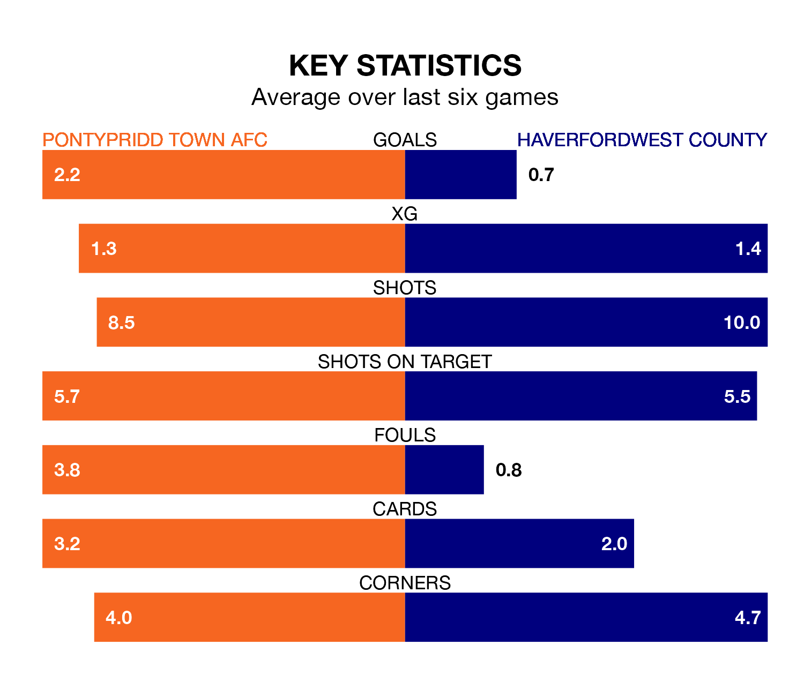

The Welsh Premier League's top two sides face each other at Ynysangharad Park in Friday lunchtime's kick-off, when zero-placed Pontypridd Town AFC host zero-placed Haverfordwest County.
Pontypridd Town have picked up eight wins and six draws from 27 games so far this season, and sit four points below the visitors going into the 12.30pm match.
The Bluebirds, meanwhile, have won eight and drawn 10 of 28, picking up 34 points.
With 23 goals in 27 games so far this season, Pontypridd Town are the league's-4th-lowest scorers with 0.9 goals per game. But they are conceding fewer than average too, letting in 33 goals at a rate of 1.2 per game.
Haverfordwest are also below average scorers, with 1.2 goals per game, compared to a league average of 1.5. They have conceded 1.3 goals per game.
In the last 10 years, Pontypridd Town and Haverfordwest have played each other on nine occasions. They won three each, and they drew three times.
On average, the Dragons scored 1.3 goals and the Bluebirds 1.4 in those matches.
Their last meeting was on February 9, when they played out a 1-1 draw.
The Dragons are in good form in the Welsh Premier League, with four wins and two draws from their last six games.
With a win and three draws over that period, County's form is much worse – they have taken six points from 18, compared to the hosts' 14.
Pontypridd Town's last match was on March 16, a 1-1 draw against Barry Town United, with Owain Jones getting the goal for the Dragons.
Haverfordwest beat Aberystwyth Town 2-0 last time out, on March 15, with Daniel Thomas Hawkins and Martell Taylor-Crossdale on the scoresheet.
Updated: 12:39 (UTC), 26/03/24